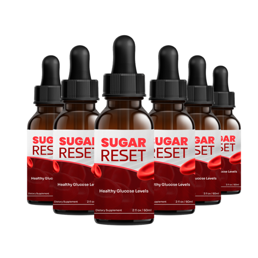
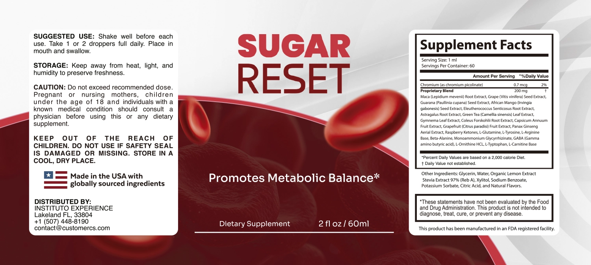
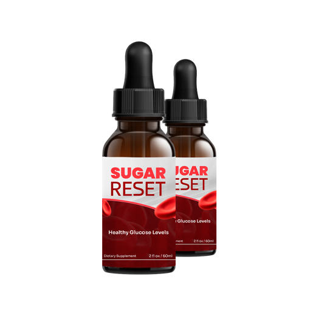
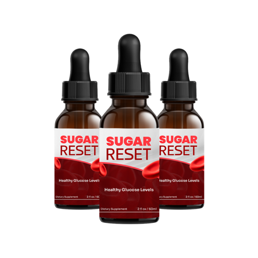

Sugar Reset Review: What's Really in the Drops, and Are They Worth It?
Sugar Reset packs 22 botanicals and amino acids, plus chromium, into a one-milliliter dropper. The label lets you do some revealing math. It is not a diabetes treatment, and nothing here suggests otherwise.
Key takeaways
- Sugar Reset is a liquid supplement sold in 60 ml bottles. The serving is 1 ml, and the label says to take one or two droppers a day.
- Each 1 ml serving has chromium (0.7 mcg, 2% DV) and a 200 mg proprietary blend of 22 ingredients, including gymnema, guarana, green tea, coleus and raspberry ketones.
- The blend is spread very thin. Twenty-two ingredients share 200 mg, an average of about 9 mg each. The label doesn't give individual amounts.
- It does not treat diabetes or lower blood sugar, and it can't replace any medicine. Anyone on glucose-lowering drugs should talk to their doctor before using it.
- Cost runs about $0.82 to $2.80 a day depending on the pack and whether you take one or two droppers. Official orders carry a 60-day guarantee.
Sugar Reset is a liquid supplement with a tiny dose of chromium and a 200 mg proprietary blend of 22 botanicals and amino acids, marketed to support metabolic balance. It isn't a diabetes treatment and has no published trial. The blend is spread so thin that most ingredients can only be present at a few milligrams, far below studied doses.
If you've been searching for Sugar Reset reviews, you've probably seen ads that make it sound like a breakthrough for blood sugar. This review takes a calmer approach. We read the Supplement Facts panel, did the arithmetic on the blend, priced it per day and looked at who should stay away. Nothing on this page is a reason to change how you manage diabetes or prediabetes. That stays between you and your doctor.
We don't make or sell Sugar Reset. If you mainly want the safety picture, read our separate guide to Sugar Reset side effects and who should skip it.

Sugar Reset: check today's price
A liquid chromium and botanical blend for metabolic balance. One or two droppers a day. Sold only on the official site, with a 60-day money-back guarantee.
See the official price →What is Sugar Reset?
Sugar Reset is a dietary supplement in liquid form. It comes in a 2 fl oz (60 ml) bottle with a dropper. The front label says it "promotes metabolic balance," with the usual asterisk: the FDA hasn't evaluated the statement, and the product isn't intended to diagnose, treat, cure or prevent any disease.
The directions are short. Shake well before each use, take one or two droppers full daily, place the liquid in your mouth and swallow. One serving is 1 ml, and there are 60 servings per bottle.
The label names Instituto Experience of Lakeland, Florida, as distributor and says it's made in the USA with globally sourced ingredients in an FDA-registered facility. Registration just means the facility is on file with the FDA. It isn't an approval of the product, and supplements don't need FDA approval before they're sold.
What are the Sugar Reset ingredients?

Each 1 ml serving contains two lines of active ingredients. The first is chromium, as chromium picolinate, at 0.7 mcg, which the label lists as 2% of the Daily Value. The second is a 200 mg proprietary blend of 22 ingredients, listed in this order:
| Group | Ingredients in the blend | Why they're usually included |
|---|---|---|
| Adaptogens and roots | Maca root, eleuthero root, astragalus root, panax ginseng (aerial parts) | Energy and stress support |
| Weight-loss botanicals | African mango seed, green tea leaf, coleus forskohlii root, capsicum fruit, grapefruit fruit, raspberry ketones | Marketed for metabolism and appetite |
| Blood sugar herb | Gymnema leaf | Traditionally used for sugar cravings and glucose |
| Stimulant | Guarana seed | Natural source of caffeine |
| Antioxidant | Grape seed extract | Polyphenols |
| Amino acids | L-glutamine, L-tyrosine, L-arginine, beta-alanine, GABA, L-ornithine, L-tryptophan, L-carnitine | Assorted energy, mood and metabolism roles |
| Licorice compound | Monoammonium glycyrrhizinate | Sweet-tasting licorice derivative |
The other ingredients are glycerin, water, organic lemon extract, stevia extract (97% Reb A), xylitol, sodium benzoate, potassium sorbate, citric acid and natural flavors. Stevia and xylitol sweeten the liquid. Neither adds meaningful sugar.
How much of each ingredient is actually in Sugar Reset?
The label doesn't say. It gives the total for the blend, 200 mg, but not the amount of any single ingredient inside it. That means nobody, including us, can check the doses against research. What we can do is put limits on them.
Under US labeling rules, ingredients in a proprietary blend must be listed in descending order by weight. Maca is first, so it's the largest. L-carnitine is last, so it's the smallest. And an ingredient in position number n can't be more than 200 divided by n milligrams, because everything above it weighs at least as much.
| Ingredient | Position in blend | Maximum possible per 1 ml | Typical study amount |
|---|---|---|---|
| Maca root extract | 1st | 200 mg (in practice far less) | 1.5 to 3 g of maca a day |
| Guarana seed extract | 3rd | About 66 mg | Varies; caffeine content isn't stated |
| Green tea leaf extract | 7th | About 28 mg | Several hundred mg of catechins |
| Gymnema leaf extract | 8th | 25 mg | Around 400 mg a day in many studies |
| Coleus forskohlii root | 9th | About 22 mg | Often 250 mg of standardized extract, twice daily |
| Raspberry ketones | 13th | About 15 mg | No good human evidence at any dose |
| Chromium (separate line) | Disclosed | 0.7 mcg | Commonly 200 to 1,000 mcg in trials |
Those maximums are generous. They assume everything above each ingredient is the same weight. Spread evenly, 22 ingredients in 200 mg works out to about 9 mg each. Even two droppers only doubles that.
The chromium is the clearest example, because it's disclosed. At 0.7 mcg per serving, it's 2% of the Daily Value. A normal diet with whole grains, broccoli and meat usually supplies more chromium than that. Studies looking at chromium and glucose use doses hundreds of times higher, and even those have produced mixed results, according to the NIH Office of Dietary Supplements.
Does Sugar Reset work for blood sugar?
There's no published study of Sugar Reset. So the honest answer is that its effect is unknown, and the label math gives little reason to expect a measurable one.
Some ingredients do have research. Gymnema has small human trials suggesting it may reduce the taste of sweetness and modestly affect glucose, usually at around 400 mg a day of extract. Chromium has dozens of trials with inconsistent results. Green tea, African mango and coleus have been studied for weight with modest or unclear findings. Raspberry ketones have essentially no human evidence for weight loss. The NCCIH's overview of supplements for diabetes is blunt: there's no strong evidence that any of them can manage the condition.
Ingredient evidence also isn't product evidence. Even a promising herb at the right dose doesn't tell you what a 25 mg slice of a 22-way blend will do. We go deeper on each ingredient in our Sugar Reset ingredients breakdown, and on the evidence question in does Sugar Reset work.
If blood sugar is your concern, the tools with real evidence are diet quality, physical activity, sleep, weight management when it's needed, and, for many people, prescribed medicine. Our article on blood sugar swings and brain fog covers how glucose dips and spikes feel day to day and what steadies them.
How much does Sugar Reset cost per day?
Sugar Reset is sold in three packages on the official site. These are the prices published at the time of writing. Check the official page for current numbers, because they change.

2 Bottles · Starter $79/bottle Check Availability → + $9.99 shipping 6 Bottles · Best Value $49/bottle Claim Discount → Free US Shipping
3 Bottles · Popular $69/bottle Claim Discount → Free US ShippingPrices shown are the manufacturer's published rates at the time of writing and can change without notice.
Because the dose is one or two droppers, one 60 ml bottle lasts 30 to 60 days. Here's the per-day math both ways:
| Package | Total | At 1 ml a day | At 2 ml a day |
|---|---|---|---|
| 2 bottles at $79 | $158 + $9.99 shipping | 120 days, about $1.40/day | 60 days, about $2.80/day |
| 3 bottles at $69 | $207, free US shipping | 180 days, about $1.15/day | 90 days, about $2.30/day |
| 6 bottles at $49 | $294, free US shipping | 360 days, about $0.82/day | 180 days, about $1.63/day |
Each order is a one-time charge, not a subscription. A plain chromium tablet costs a few cents a day by comparison, and gives you hundreds of times more chromium. What you're paying for with Sugar Reset is the blend and the liquid format, so weigh that honestly.
Our advice on packs: if you're unsure, start small. A 6-bottle supply at one dropper a day lasts close to a year, which is a long commitment to a product with no trial behind it.
What is the Sugar Reset refund policy?
Orders through the official checkout come with a 60-day money-back guarantee. Read the refund terms on the order page before buying; they explain how to request a refund and whether bottles need to be sent back. The label lists a customer service email (contact@customercs.com) and a phone number.
Mark the date of your order on a calendar. If you've seen no change you can actually measure by about day 50, contact customer service while you still have room. Bottles bought from unofficial sellers may not be covered.
Is Sugar Reset safe? Side effects and who should skip it
For a healthy adult, the tiny doses make serious problems unlikely. A few groups need real caution, though:
- People taking insulin or diabetes medicines. Gymnema and chromium can, in theory, add to their glucose-lowering effect. At these amounts the risk is probably small, but no one can verify the gymnema dose. Talk to your doctor first and keep monitoring.
- Anyone sensitive to caffeine. Guarana is a natural caffeine source. The amount isn't stated.
- Dog owners. The liquid contains xylitol, which is toxic to dogs. Keep the bottle well out of reach.
- Pregnant or nursing women and anyone under 18, per the label's caution.
Never stop or reduce a prescribed medicine because you've started a supplement. Those details, and the warning signs of low blood sugar, are covered in our Sugar Reset side effects guide.
Sugar Reset pros and cons
| Pros | Cons |
|---|---|
| Easy liquid format, flexible 1 to 2 ml dose | 200 mg blend split across 22 ingredients, amounts hidden |
| No sugar; sweetened with stevia and xylitol | Chromium at 0.7 mcg is far below studied doses |
| Bottle lasts 30 to 60 days | No published trial on the product |
| One-time charge, 60-day guarantee on official orders | Contains guarana (caffeine) and xylitol (dangerous to dogs) |
| Clear caution panel on the label | Not suitable as a substitute for diabetes care |
Is Sugar Reset legit, or a scam?
It's a real supplement with a printed label, a named distributor and a stated guarantee. In that narrow sense it's legit. But be careful with how it's sold. Any ad, video or message that suggests Sugar Reset can reverse diabetes, replace insulin or metformin, or "reset" your blood sugar is making claims the label itself doesn't make and the formula can't support. Treat those as red flags.
For where to buy Sugar Reset, the official site is the only source where we can confirm the guarantee applies. Marketplace listings may come from third parties.
Our verdict on Sugar Reset
Sugar Reset is a long ingredient list with very little room for any one ingredient. The disclosed chromium dose is trivial, and the label math caps gymnema, the most relevant herb, at a small fraction of the amounts used in studies. There's no product trial. For blood sugar, it's hard to recommend over proven basics and medical care.
If you're a healthy adult who likes the idea of a sugar-free metabolic tonic, understand the limits and want to try it within the 60-day window, it's a low-risk experiment for most people. If you have diabetes, prediabetes or take any glucose-lowering medicine, speak with your doctor before buying, and never treat it as a replacement for your care plan. Our piece on how added sugar affects focus has practical changes that help regardless, and you'll find more in our energy and metabolism section.
If you decide to try it
- Tell your doctor first if you have any glucose condition or take medicine for it, and bring the label.
- Start with one dropper, not two, for the first couple of weeks, especially if you're sensitive to caffeine.
- Don't expect a lab result to move inside the guarantee. An A1C test reflects roughly three months of blood sugar, so 60 days can't give you a clean answer.
- If you already check your glucose at home, keep doing it exactly as before, and report any unusual lows to your care team.
Above all, keep the expectation realistic. The most a product like this can reasonably offer is a small nudge alongside better meals and more movement. If that's what you're after, the guarantee gives you room to find out.
Sugar Reset: check today's price
A liquid chromium and botanical blend for metabolic balance. One or two droppers a day. Sold only on the official site, with a 60-day money-back guarantee.
See the official price →Frequently asked questions
How do you take Sugar Reset?
Shake the bottle well, then take one or two droppers full (1 to 2 ml) a day. Place the liquid in your mouth and swallow. Don't exceed the recommended dose.
Can Sugar Reset replace metformin or insulin?
No. It isn't a treatment for diabetes and has no evidence of lowering blood sugar. Never stop or change diabetes medicine without your doctor's guidance.
Does Sugar Reset contain sugar?
The label doesn't list sugar. It's sweetened with stevia extract and xylitol, plus lemon extract and natural flavors.
Does Sugar Reset have caffeine?
It contains guarana seed extract, which naturally contains caffeine. The label doesn't state how much, but since guarana is part of a 200 mg blend, the amount per serving is likely small.
How long does a bottle of Sugar Reset last?
One 60 ml bottle holds 60 servings of 1 ml. At one dropper a day it lasts about 60 days; at two droppers, about 30 days.
Is Sugar Reset sold on Amazon?
We can only confirm the official site as a source. The 60-day guarantee applies to orders through the official checkout, and marketplace listings may come from other sellers.
Can I take Sugar Reset with coffee?
Probably, for most people, but remember guarana adds a little caffeine on top of your coffee. If you're caffeine-sensitive or have heart rhythm problems, ask your doctor first.
Is Sugar Reset keto friendly?
It has no listed sugar and the serving is only 1 to 2 ml, so it's unlikely to affect a low-carb diet. Glycerin and xylitol contribute minor carbohydrates at most.
Want to check the label yourself?
Sugar Reset prints its full ingredient list and offers a 60-day money-back guarantee on official orders. Check the current price on the official site.
See Sugar Reset's official price →Related: Blood sugar swings and brain fog · Sugar and brain fog · Artificial sweeteners and brain fog